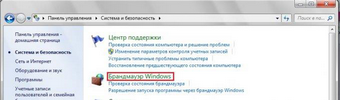
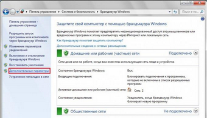
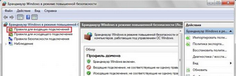
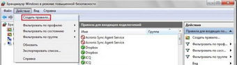
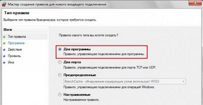
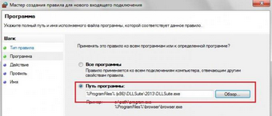
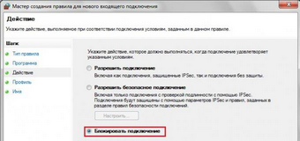
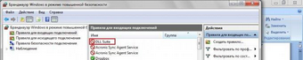
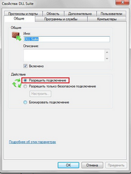

Запрет программе доступ в Интернет на Windows 7
Некоторые программы или игры могут самостоятельно выходить в интернет в фоновом режиме, например для того, чтобы загрузить обновление или отослать статистические данные.
Причем делают они это, как правило, без разрешения, а зачастую даже без уведомления владельца компьютера, в результате чего падает скорость интернет-соединения, а также медленнее работает сам компьютер. Если вы считаете, что доступ к интернету таким программам совершенно не нужен и только мешает, то вы легко можете заблокировать им доступ с помощью стандартного брандмауэра Windows. Ниже описано, как это можно сделать.
Откройте меню Пуск и зайдите в Панель управления. Перейдите к разделу Система и безопасность и выберите пункт Брандмауэр Windows.

В окне настроек брандмауэра Windows перейдите к пункту Дополнительные параметры.

После этого откроется окно с дополнительными настройками безопасности брандмауэра. В нем выберите раздел Правила для входящих подключений.

Далее зайдите в меню Действие и выберите пункт Создать правило.

В окне Мастера создания правил для подключений оставьте флажок на пункте Для программы и нажмите Далее.

В следующем окне при помощи кнопки Обзор нужно будет указать путь к исполняемому файлу нужной программы.

После этого необходимо установить флажок на параметре Блокировать подключение.

В следующих двух шагах нужно будет указать, для каких профилей применяется правило (доменный, частный или публичный), а также задать имя для созданного правила. После нажатия кнопки Готово в списке правил для входящих подключений появится новое правило со значком блокировки.

В случае, если вам понадобится разрешить программе доступ к сети интернет, просто нажмите правой кнопкой мышки на соответствующем правиле, выберите из контекстного меню пункт Свойства и установите флажок на пункте Разрешить подключение.

Правила для исходящих подключений создаются точно так же. Зачастую для того, чтобы программа не тормозила интернет-соединение, приходится блокировать для нее и входящее и исходящее подключение.